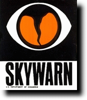

Weather Spotter Information

There will be no public class this year do to budget cost
But below is and online course to refresh and help new spotters
Weather Spotter Information – Created by NWS Northern Indiana
Severe Weather Spotters are a vital link in the timely and accurate flow of weather information into and out of weather forecast offices. These are just a small sampling of resources; however, these have been recognized by many NWS offices as being among the better resources.
NWS Northern Indiana Local Skywarn / Spotter Information Page
Online Storm Spotter Training Materials
Additional Resources for Spotters
· Storm Spotters United- Storm Spotters United is a website setup and run by Kaufman County Amateur Radio Emergency Service, Inc., a registered 501(c)3 non-profit corporation, as a public education tool designed to benefit all interested visitors.\
· Spotter Safety (From NWS Norman, OK)
Information for Ham Radio Operators
· Virtual Office Tour - HAM Operators & SKYWARN Spotters - http://www.srh.noaa.gov/tae/?n=tour-ham
· AMATEUR "HAM" RADIO Information from the National Weather Service Marine Forecasts - http://www.nws.noaa.gov/om/marine/ham.htm
· How to Get Started in Ham Radio - http://www.crh.noaa.gov/ddc/?n=hamlicense
· Amateur Radio Disaster Services - http://www.ares.org/